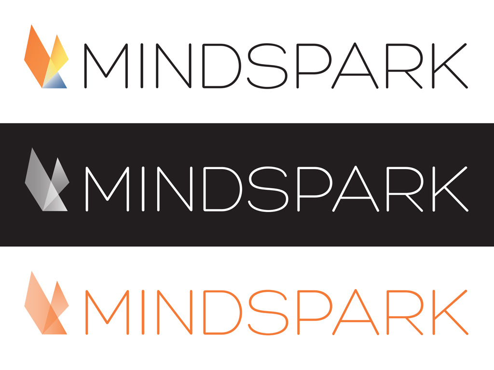
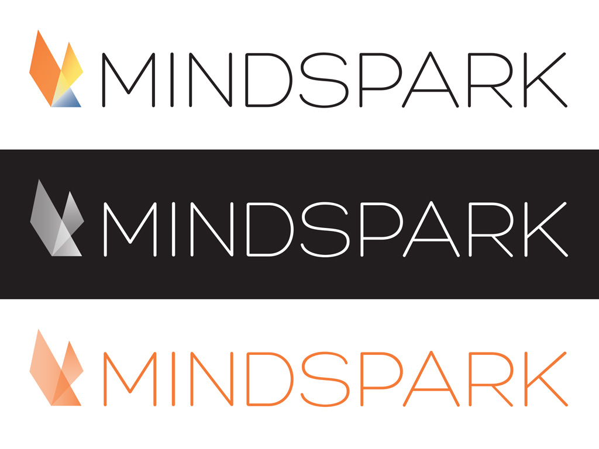

Brand Identity and Logo Design for an established internet application company. Collaboration with Marie McGwier.
 

We were asked by Mindspark’s COO to make a new logo reflecting the new direction of the company. While the old logo embodied the previous company vision of "digital snacks", the new logo should express innovation and professionalism.
We approached the design by updating the font first, then pairing it with abstract geometric designs to represent the "spark".

We created a comprehensive style guide for our Marketing and HR Departments.